1970年にE.F.Coddが提唱した関係モデルは、データベースを関係の集合として 表現したものである。関係とは、定義域(値の集合)
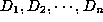
の直積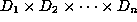
の部分集合として定義される。 領域には属性という名前がつけられる。属性名は一意的でなければならないが、 領域としては重複していてもかまわない。また領域は無限集合であってもよい が、データベースで使う関係はつねに有限集合だけである。たとえば 表1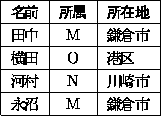
が関係の例である。名前、所属、所在地が属性であり、個々の値は属性の実現 値である。実現値の組合せである行がタプルと呼ばれる。関係はタプルの集ま りとみることができる。データ構造の面からみれば、スキーマは属性の集合
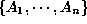
で関係を定義することができる。この関係を で表わしたりする。このように関係はひじょうに単純な
表現であるので、データベース理論での数学的な扱いが容易にできるようになっ
た。関係はこのような表形式で表現されるがすべての表が関係というわけでは
ない。関係であるためには次の2つの条件が成立しなければならない。
で表わしたりする。このように関係はひじょうに単純な
表現であるので、データベース理論での数学的な扱いが容易にできるようになっ
た。関係はこのような表形式で表現されるがすべての表が関係というわけでは
ない。関係であるためには次の2つの条件が成立しなければならない。
それでは実世界を関係としてどのように表現するのだろうか。まず表現したい 世界の属性を集め、表1のような関係を作る。この平坦な表表現、 これが関係モデルのデータ構造である。しかしこのままだと、所属-所在地に データの重複があったり、名前-所属の変更によって所属-所在地の情報が喪失 する危険性がある。そこで属性間の意味制約、すなわち従属性(dependency)を 考え、最初の表(第1正規形)に対し正規化(Normalization)をおこなう。
まず関数従属(functional dependency) が定義できる。これは関係
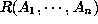
の中の属性の集まり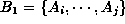
の値によっ て他の属性の集まり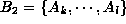
の値が一意的に決まるとき、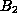
は に関数従属であるといい、
に関数従属であるといい、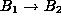
と書く。すなわ ち、もしタプルrの属性 の値をと書けば、関数従属は任意のタ
プル、に対して
の値をと書けば、関数従属は任意のタ
プル、に対して
であることである。表1では、名前所属、所属
 所在地の2つの関数従属がある。このままだと、もし横田が所属
を変更した場合そのタプルの所属と所在地を更新しなければならない。すると
O が港区にあるという情報は失われてしまう。そこで関係を関数従属性にした
がって表2のように分割する。もっと一般化すると、キーに対す
る関数従属がその関係内でのすべての関数従属であるような関係に分割するこ
とである。このような関係を第3正規形と呼ぶ。この関数従属に基づく分割に
は第2正規型を始めいくつかのものがあるが、これらは関数従属をどのレベル
でとらえるかの違いである。この第3正規形は上で述べたような情報の喪失を
防ぐだけでなく、表2
所在地の2つの関数従属がある。このままだと、もし横田が所属
を変更した場合そのタプルの所属と所在地を更新しなければならない。すると
O が港区にあるという情報は失われてしまう。そこで関係を関数従属性にした
がって表2のように分割する。もっと一般化すると、キーに対す
る関数従属がその関係内でのすべての関数従属であるような関係に分割するこ
とである。このような関係を第3正規形と呼ぶ。この関数従属に基づく分割に
は第2正規型を始めいくつかのものがあるが、これらは関数従属をどのレベル
でとらえるかの違いである。この第3正規形は上で述べたような情報の喪失を
防ぐだけでなく、表2
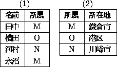
のように、重複した所属と所在地の組が除去され表現が簡潔になっている、す なわちデータの冗長性が減っている。したがってＯの所在地が変更になったと しても更新するのは1カ所だけであり、第１正規形よりも優れていることがわ かる。
関係の正規化は関数従属だけによるものではない。多値従属性(multivalued dependency) も重要である。表3
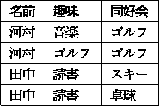
を考えよう。この関係は名前、趣味、同好会の3つからからなっている。この 関係の中には関数従属性はないが、この関係を表4
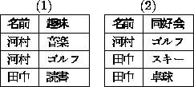
のように分割すると冗長性を減らすことができる。趣味とか同好会のように名
前に対して複数の値をもつ場合を多値従属性と呼び、名前
 趣味(および名前
同好会)と表わす。これは、もとの関
係を名前と趣味、名前と同好会の2つの関係に分割してもよいことを意味して
いる。複数に分割した関係を再び結合しても情報の喪失が生じないのは明らか
だろう。
趣味(および名前
同好会)と表わす。これは、もとの関
係を名前と趣味、名前と同好会の2つの関係に分割してもよいことを意味して
いる。複数に分割した関係を再び結合しても情報の喪失が生じないのは明らか
だろう。
関数従属や多値従属の他にも多くの従属性が考えられている。ここでもっとも 重要なことは、分割した関係を再びもとに戻しても情報の喪失がない、という ことである。このような分割可能な最大の属性集合どおしの関係を結合従属性 と呼んでいる。
次に関係に対するデータ操作を考えてみよう。関係モデルでは、集合操作を中 心とする関係代数(Relational Algebra)と、一階述語論理の記述を使用した関 係論理(Relational Calculus)がある。
まず関係代数であるが、次の５種類からなる。
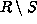
は、Rに属しているがSには属して いないタプルの集合である。
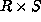
は、で与えられる。
 を取り出す操作を、
CによるRの選択という。これを
を取り出す操作を、
CによるRの選択という。これを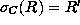
と書くことにする。C は属性名,実現値,四則演算子、比較演算子、論理演算子から構成される論理式 であり、属性名に実際のタプルの値が代入されてその条件の充足可否が決定さ れる。
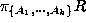
と書く。
以上の基本操作を合成することにより、以下の操作が定義される。
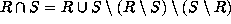
で定義される。
 -Join)
-Join) と
と がそれぞれRとSの属性であった
とき、と
がそれぞれRとSの属性であった
とき、と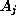
によるRとSの -結合とは、
-結合とは、
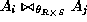
で与えられる関係のことである。 は比較演算子であるが、とくにそれが等号であるとき等結合(equi-join) と呼
び、さらにRとSの共通の属性を重複がないように除去したものを自然結合
(natural join)という。
は比較演算子であるが、とくにそれが等号であるとき等結合(equi-join) と呼
び、さらにRとSの共通の属性を重複がないように除去したものを自然結合
(natural join)という。
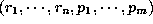
、 とする。割算
とする。割算
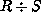
は、すべての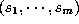
に対し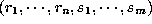
がRのタプルであるような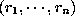
を求める操作である。明らかに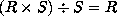
で ある。
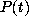
を満足するタプルの集合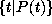
と 一般的に指定することができる。関係代数の操作すべてが関係論理で表現可能 であること、また関係論理がタプル変数のスコープを明確にしたとき、両者が 同等であることがわかっている。